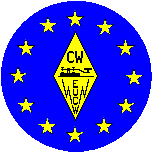

|
THE EUROPEAN CW ASSOCIATIONEUCW 160m contest |
 |
To promote an increase in activity throughout Europe and even the World, the Union Francaise des Telegraphistes has proposed a joint Top-Band contest.
The date is normally the first weekend of January each year except when the 1st January falls on the Saturday or Sunday . In such a case, the second weekend will be chosen.
Saturday from 20h00 to 23h00 GMT
Sunday from 04h00 to 07h00 GMT
Frequencies : 1810 to 1840 kHz
Mode : CW
The contest is open to participants worldwide, including SWLs.
Classes.
Reports exchanged.
Classes A,B,& C : RST/name/Club/ membership number.
Class D : RST/name/NM (non-member).
Class E : Full report on each station in QSO.
Points.
Classes A,B,C & D : 1 point per QSO with a station in the same DXCC entity.
2 points per QSO with a station in another DXCC entity but in same
continent.
5 points per QSO with a station in another continent.
Class E : 2 points for each complete report.
All Classes: 10 points for each official EUCW club station, e.g. DA0HSC, DF0ACW, DF0AGC, DK0AG, DK0HSC, DK0RTC, DL0CWG, DL0CWW, DL0HSC, DL0RTC, DL0XX, DL0XYL, EA3HCC, F8UFT, EM0RSE, G4FOC, GX0IPX, HB9HC, IQ3QR, MX5IPX, ON5CFT, etc.
A QSO with the same station may be made on Saturday and again on Sunday.
Multipliers.
One multiplier per EUCW Club contacted per day.
Scores : the number of points multiplied by the number of multipliers.
The EUCW affiliated clubs are :
see http://www.agcw.de/eucw/eucw.html
Associated non-European clubs : QRP-ARCI (U.S.A.) CWAS (Brazil) GACW (Argentina).
Logs.
Date/time GMT/callsign/report/ points claimed/ multipliers.
The list of multipliers for each day.
Summary on a separate page giving details of the station equipment including the antenna, the entry Class, power used and points claimed.
Finally a declaration that the regulations as well as the license conditions have been respected followed by the signature of the operator.
Where possible please submit entries by an ASCII file – either by floppy or by e-mail sent to the corrector
NB : Special callsigns will not be classed.
Entries to be sent before February 8 to :
Ghislain BARBASON, 5 rue de l'Ecluse, F-02190 PIGNICOURT, Email:..f6cel (ay-symbol) wanadoo.fr..Prizes.
1st Class A A cup.
2nd Class A A trophy.
3rd Class A A trophy.
1st Class B A cup
2nd Class B A trophy
3rd Class B A trophy
1st Class C A cup
1st YL station A cup
1st Class D A trophy
1st Class E A cup.
Further information can be obtained from :
Source: received from F5NQL c/o UFT (translated from French by F6GPA es XYL)